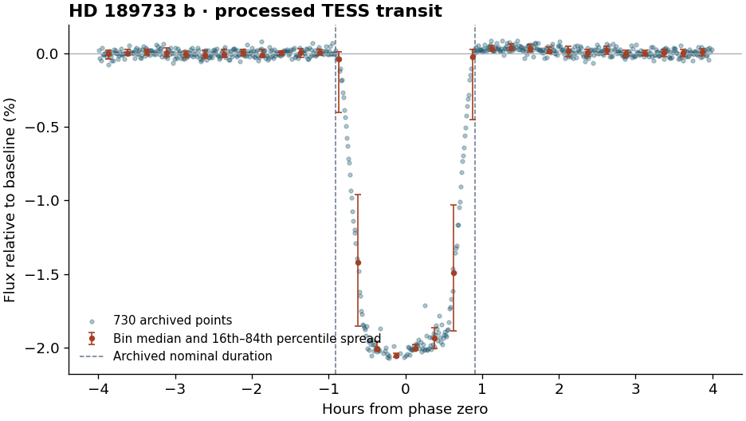

HD 189733 b in TESS photometry
As the planet crosses its star, the phase-folded flux drops and returns to its out-of-transit baseline. The figure uses the committed SPOC PDCSAP flux product after the repository’s detrending, normalisation and initial binning.

Download the observed curve · Download the figure

How correlated noise changes transit recovery
The separate injection–recovery experiment simulates transits under white and correlated noise. For the 1,000 ppm correlated case, independent-sample interval coverage was 54.9%, versus 93.2% when uncertainty was estimated across transit events.
Download the simulated results · Read the methods and assumptions